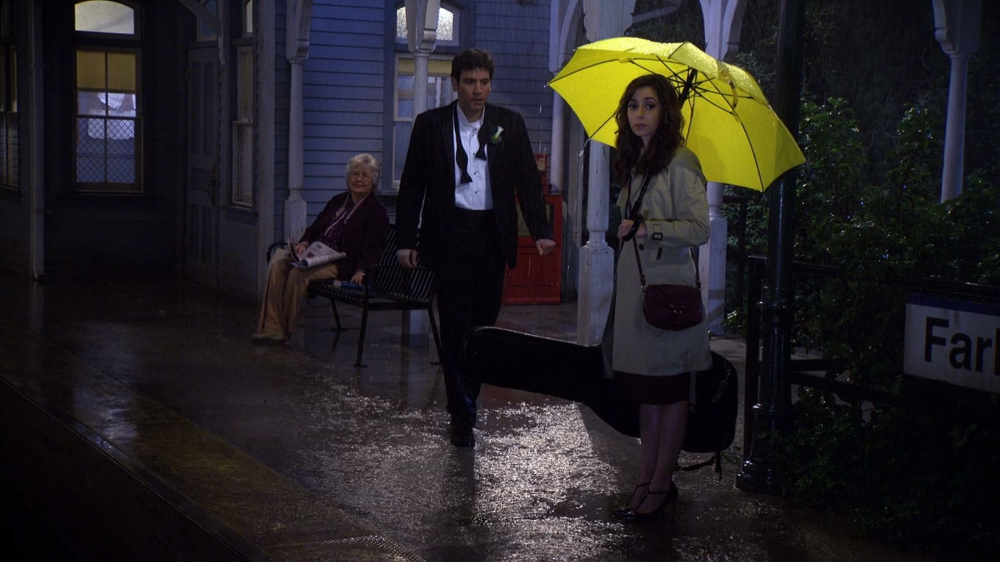

Tracy McConnell
She was a bass player and vocalist for an economics themed band called Superfreakonomics, which commonly played around New York in the 2010s. She is the wife of Ted Mosby and The Mother of his two children, Penny Mosby and Luke Mosby. She sings the best version os the song "La Vie en Rose". She dies of an undisclosed illness.